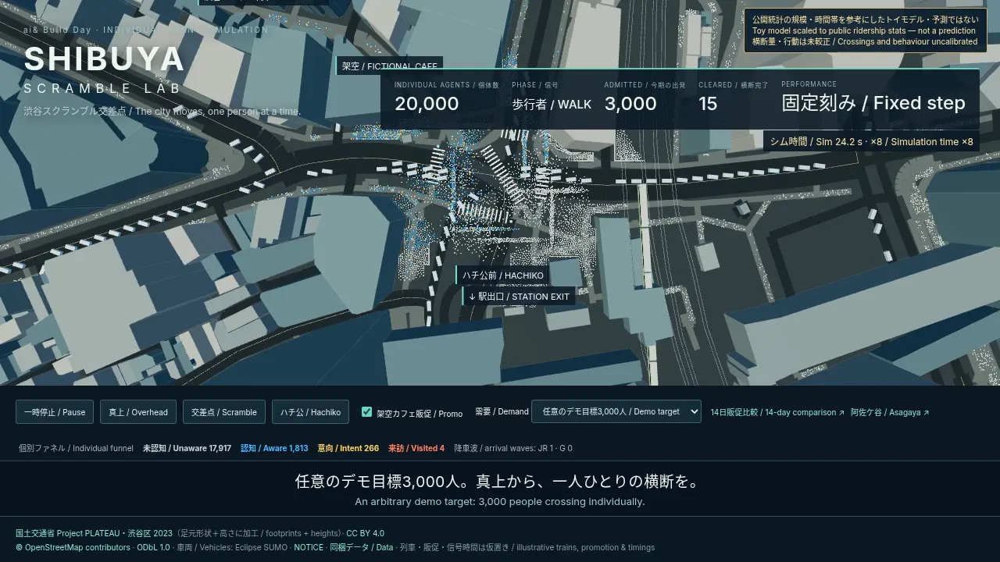
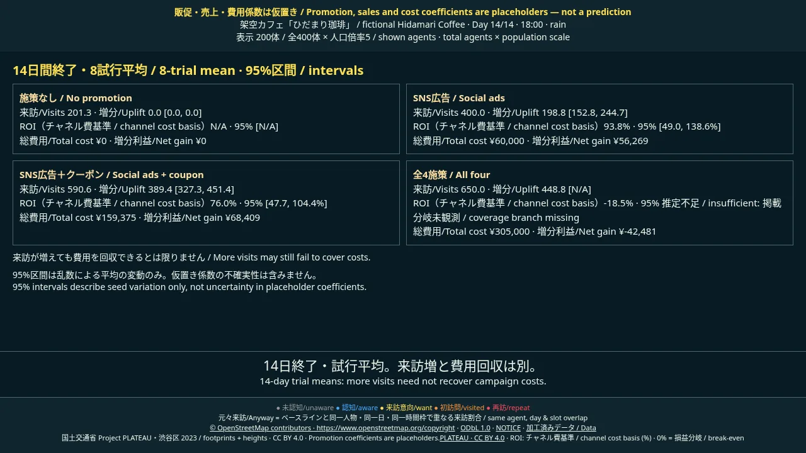

動画42秒：本編30秒（シミュレーション時間×8）＋クレジット12秒。
42-second video: 30-second scene (simulation time ×8) + 12-second credits.
別添の shibuya-scramble.mp4 を選ぶと、この画面で再生できます。MP4はリポジトリには同梱していません。
Select the separately supplied MP4 to watch it here. The repository contains representative stills.
作業環境のMP4 / Workspace MP4 · 投稿説明と出典 / Description and credits · README
任意のデモ目標3,000人。横断量・行動は未較正。予測ではありません。
Arbitrary demo target: 3,000. Crossings and behaviour uncalibrated — not a prediction.

14日終了時の試行平均。来訪増と費用回収は別です。販促・売上・費用係数は仮置き。
Completed 14-day trial means. More visits need not recover costs. Promotion, sales and cost coefficients are placeholders.

PLATEAU 渋谷区2023 CC BY 4.0 · © OpenStreetMap contributors ODbL 1.0 · NOTICE